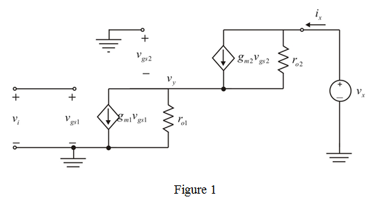
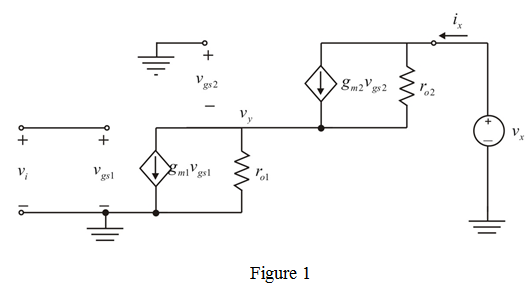
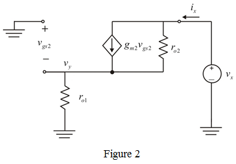

Refer to Figure P7.28 in the textbook for the circuit.
From the circuit diagram, the gate voltage of  is,
is,
The small signal equivalent circuit is shown in Figure 1.

Refer to Figure P7.28 in the textbook for the circuit.
From the circuit diagram, the gate voltage of is,
The small signal equivalent circuit is shown in Figure 1.

From the circuit diagram, write following voltage relations:
and
Since is zero, the dependent voltage source is open. Then, the modified circuit diagram is shown in Figure 2.

Apply nodal analysis at node
Therefore the drain voltage of transistor  is smaller than applied voltage by a factor of .
is smaller than applied voltage by a factor of .